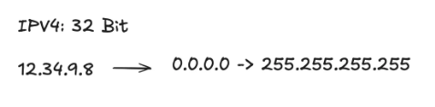
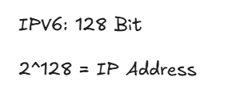
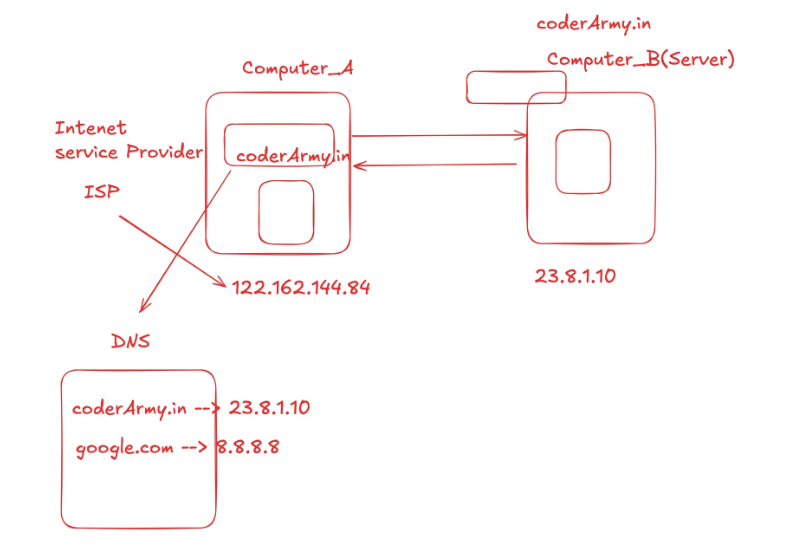

Lecture Notes
→ Foundation
HTML Basics
Lists & Tables
File Path
Forms
Media & Deployment
← Back to Home
|
How The Internet Works
1. Core Principles
The internet evolved as a series of solutions to key challenges.
- Direct Link: The simplest network is a single cable connecting two
computers. This works, but doesn't scale.
- Local Network: To connect many computers in one location (like an
office), each one connects to a central device called a Switch.
The Switch manages traffic efficiently within that single network.
- A Network of Networks: To connect different local networks, a
device called a Router is used. Routers act like traffic police,
directing data between different networks. The internet is the result
of millions of these networks all connected by routers.
2. Addressing and Packets (TCP/IP)
- IP Address: To find a specific computer in this global network,
every device needs a unique address, known as its IP Address. Routers
read this address to forward data in the right direction.
- Packets: Instead of sending large files in one go, the data is
broken into thousands of small, numbered pieces called packets.
This is more reliable and fair to other users on the network.
- TCP/IP: This is the official rulebook of the internet. It defines
how to address, break down, send, and reassemble packets to ensure
data arrives correctly.
3. IPv4: Public vs. Private Addresses
IPv4 is the original 32-bit address system, providing about 4.3 billion
addresses. When it became clear we would run out, the public vs. private
system was created as a clever solution.
- Public IP: This is a globally unique address that is visible on
the internet, assigned by your ISP. Web servers need public IPs so
that anyone in the world can connect to them.
- Private IP: This is a local address used only inside your private
network (like your home Wi-Fi). Your laptop and phone use private IPs
to talk to your router, but they are not visible to the outside world.
Common private ranges include 192.168.x.x and 10.x.x.x.

4. IPv6 & MAC Addresses
- IPv6: The long-term solution to the IPv4 shortage. It uses a 128-bit
address, providing a virtually unlimited supply of IP addresses for the
foreseeable future.
- MAC Address: This is a permanent, physical address burned into the
network hardware by the manufacturer. While an IP address is like your
home's mailing address (which can change if you move), a MAC address is
like the unique serial number of your phone (which never changes).

5. Port Numbers
An IP address gets data to the correct computer. A port number directs
that data to the correct application running on that computer.
- Analogy: An IP address is the street address of an apartment building,
and the port number is the specific apartment number.
- Well-Known Ports (0-1023): Reserved for standard services.
- Port 80: HTTP (Standard web traffic)
- Port 443: HTTPS (Secure web traffic)
- Registered Ports (1024-49151): Used by specific applications, like
databases or development servers (e.g., Port 3000 for React).
6. DNS: The Internet's Phonebook
DNS (Domain Name System) is the system that translates human-friendly
domain names (like www.google.com) into computer-friendly IP addresses.
How it works:
1. When you type a domain name, your computer first checks its own memory
(cache) to see if it already knows the IP address.
2. If not, it asks a DNS server (usually from your ISP).
3. That server then queries a series of more authoritative servers across
the internet, starting from the Root, to find the correct IP.
4. Once found, the IP address is sent back to your computer, which can
now connect directly to the website's server.

|